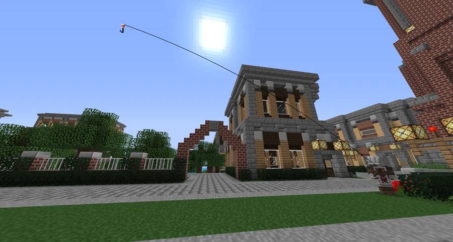

University Square
An upscale suburban area on the outskirts of Broville, developed around Broville University and marked by a bell tower.
Development and location
University Square takes its name from the nearby Broville University, or Bro-U complex, whose presence brought development to a previously unused part of the city. Housing and commerce accompany the campus and public transport.



Landmarks
The most prominent landmark is the Bell Tower, built by Metalus beside a four-way intersection. The surrounding area combines public transport, housing, and commercial premises.
Other reference points are Johannes Gutembreg public school, University Station, and Bro-U's lake, still unnamed in the neighborhood description. The school appears as Johannes Gutenberg Public School in the project list of FoxCreek Properties, which also locates its office in University Square.
See also
Sources and references
- v11.4.4 maps, signs, books and items World records
- University Square · Broville Wiki Community archive
Text adapted and expanded from University Square (contributors and history, revision 4980). Adapted text is available under CC BY-SA 3.0.